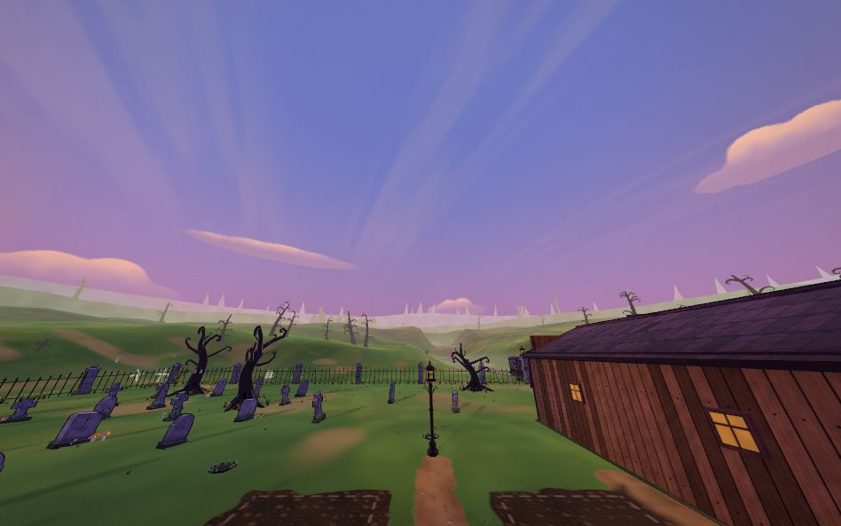
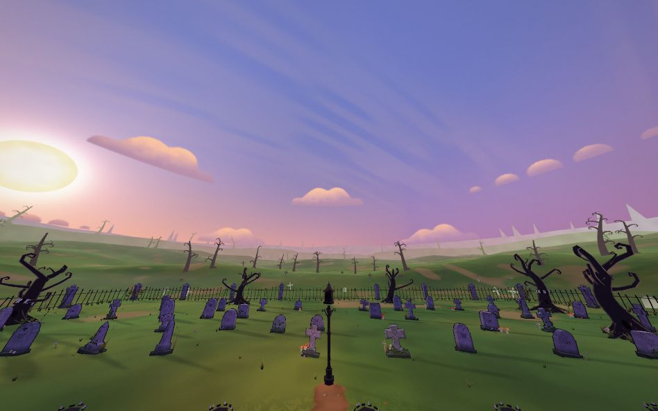
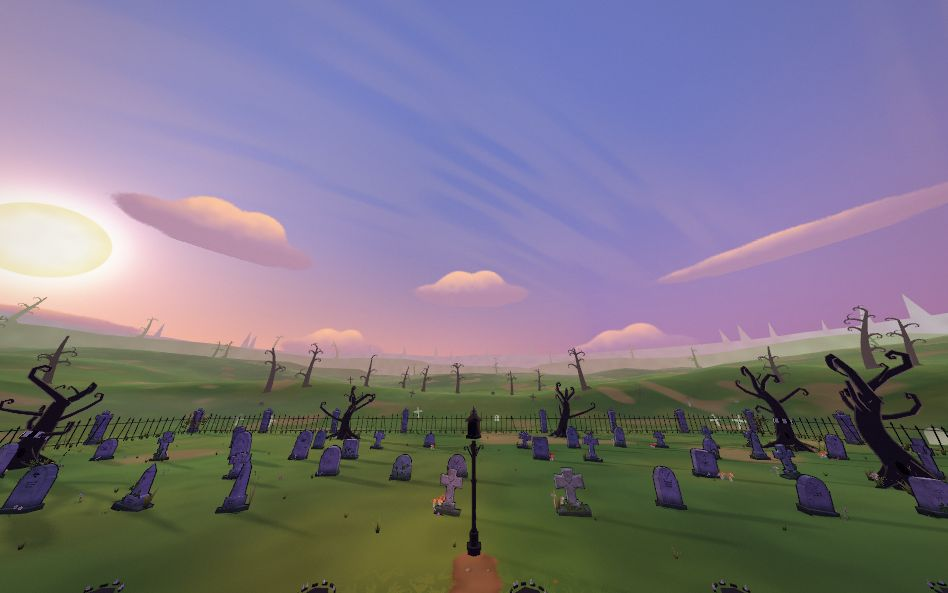

Облака · исправление разрывов
Одинаковые камеры и время сцены · реальные снимки игры
До / после
Четыре стороны
Игра ↗
До · боковой ракурс
После · боковой ракурс

До · обратный ракурс

После · обратный ракурс
